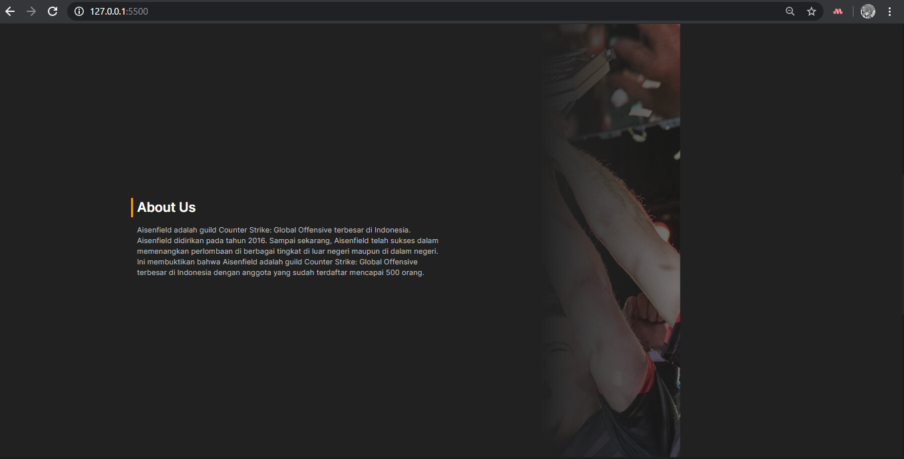

Hardest Part
1. Background image di setiap sectionnya agar resposif karena di beberapa device gambarnya aneh
> Solusi: saya menemukan caranya di stack overflow yaitu dengan menambahkan css style `background-size: cover`
2. Pada bagian carousel, saya ingin untuk `overflow-x: hidden` di satu sisi saja yaitu di kiri
> Solusi: saya menemukan caranya di stack overflow yaitu dengan menambahkan css style `clip-path: inset(-100vw -100vw -100vw 0);` pada carousel nya
3. Menemukan komposisi warna yang menurut saya cocok
> Solusi: Saya mengambil banyak referensi dari dribbble dan forum diskusi mengenai warna yang akan saya gunakan
Impossible Part
1. Background image di section
Saya ingin agar image di section menampilkan bagian yang sesuai di device kurang dari lg (tablet, smartphone) dan pc, saya sudah mencoba berbagai style dengan `background-position` dan berhasil. namun jika saya lihat di view layar besar maka background-image tersebut jadi kepotong, lalu saat saya ubah menjadi `background-size: cover`, background-position tidak berfungsi dan menampilkan bagian gambar yang tidak diinginkan. Alhasil, saya mengcrop gambarnya agar gambarnya sesuai dengan paint dan tetap dengan `background-size: cover`.
